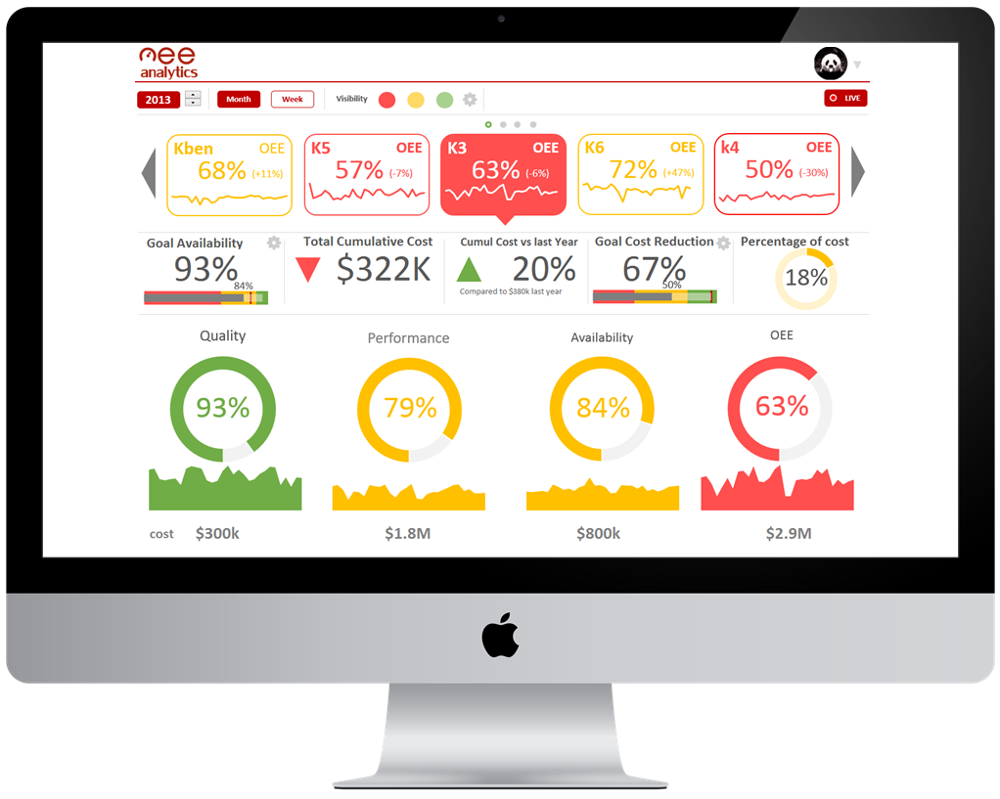

La manufactura no tiene que ser complicada.

Vuélvete más inteligente analizando que proceso te vuelve menos productivo, en menos tiempo, y con más eficiencia.
Mejora la comunicación con tu equipo, alinea tus metas productivas, conociendo los requerimientos y las prioridades.